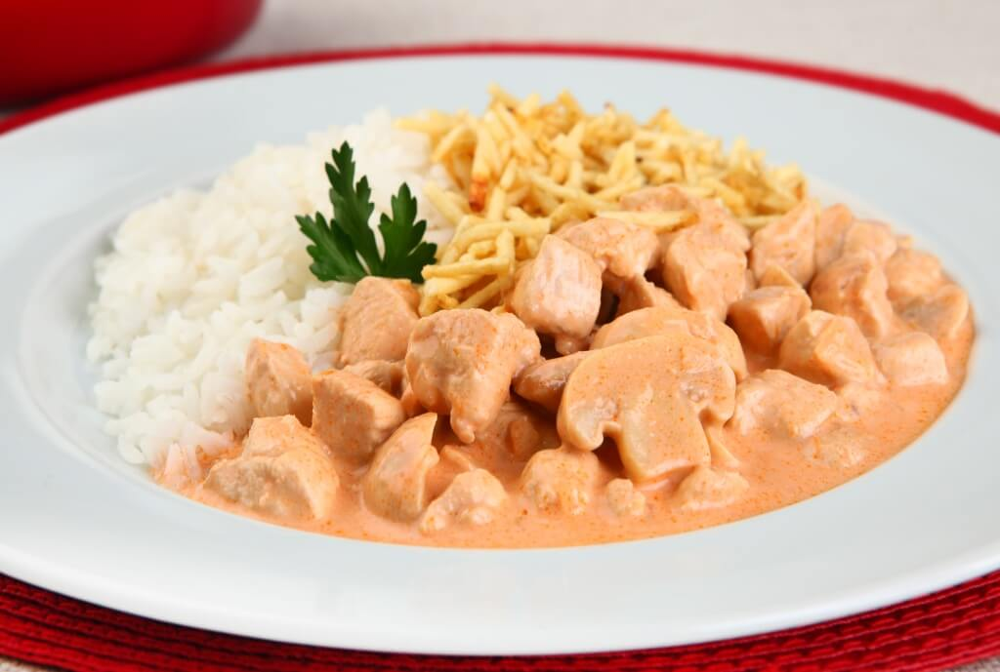

2 xícaras (chá) de cogumelos Paris cortados em fatias grossas
(pode ser substituído por champignon)
1 xícara (chá) de molho de tomates
2 latas de creme de leite

modo de preparo
Em uma panela, derreta a Margarina Claybom e acrescente os cubos
de frango; tempere com sal e pimenta e deixe o frango refogar
até que os cubos fiquem dourados;
Etapa opcional: coloque o conhaque em uma concha de metal e
coloque fogo na bebida; com cuidado, despeje o conteúdo da
concha com as chamas na panela; aguarde até que o fogo apague
(este processo é chamado de “flambar”);
Adicione o molho inglês, a mostarda, os cogumelos e o molho de
tomates e deixe cozinhando por 2-3 minutos;
Acrescente o creme de leite e continue cozinhando até que o
strogonoff fique quente, mas não deixe o creme de leite ferver
(levantar bolinhas), pois neste caso, ele pode talhar,
conferindo um aspecto estranho ao creme.